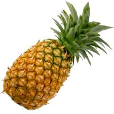

Ananá
El género Ananas comprende 9 especies aceptadas, de las casi 60 descritas,2 de plantas de flor de la familia de las bromeliáceas, de las cuales la más conocida y aprovechada es la piña, Ananas comosus.